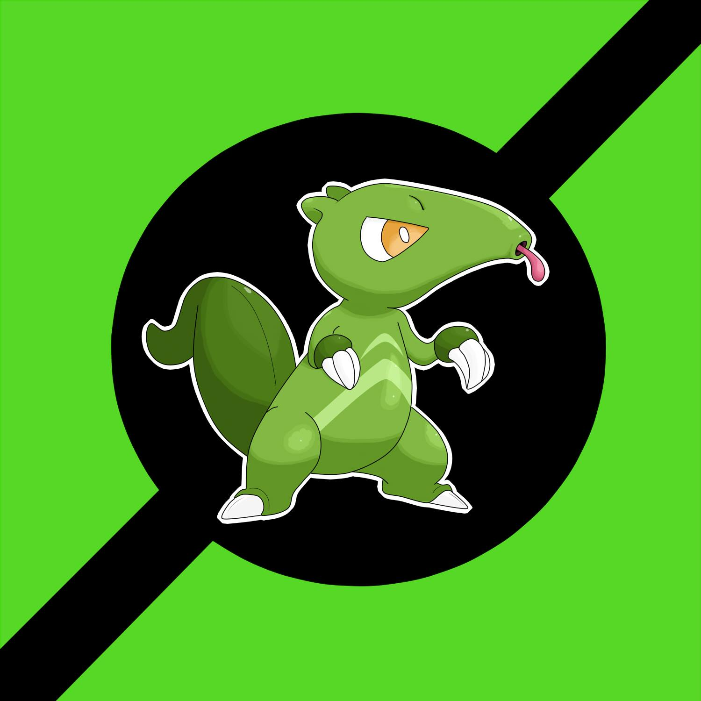

|  |
001 |
Myrmeflag |
Grama |
Overgrow |
Pokemon Sugador, utiliza seu grande bico para sugar seu alimento, consegue utilizar tambem sua grande língua para coletar objetos. |
|
002 |
Myrmeter |
Grama / Lutador |
Overgrow / Technician |
Pokemon linguarudo, utiliza sua língua como um membro adicional, consegue efetuar vários socos de maneira rápida e eficaz. |
|
003 |
Capemyr |
Grama / Lutador |
Overgrow / Technician |
Consegue fazer todos os oponentes ficarem sem ar com seu abraço, capaz de derrubar até os maiores oponentes. Tem um temperamento equilibrado, sabendo dosar na hora certa os momentos de fúria e de amizade. |
|
004 |
Manedolf |
Fogo |
Flash Fire |
Pokemon teimoso, gostam de brincar e se divertir, porem causando grandes problemas de concentração, quando mal treinados. |
|
005 |
Magmanar |
Fogo / Escuridão |
Flash fire / Magmar Armor |
Pokemon lobo de fogo, tem uma mordida muito forte que é capaz de quebrar rochas, consegue ser bem furtivo para atacar suas presas sem ser notado |
|
006 |
Magsocyon |
Fogo / Escuridão |
Flash fire / Magmar Armor |
Extremamente desconfiados, conseguem ser furtivos e cruéis, não confiando em quase ninguém. |
|
007 |
Manaty |
Água |
Torrent |
Pokemon mamífero marinho, são bem sociaveiss e gostam de brincar, costumam ter bastante resistência devido a sua pele grossa. |
|
008 |
Manaid |
Água |
Torrent / Water Absorb |
Pokemon obeso, são extremamente pesados e utilizam isso a seu favor, conseguem resistir bem a danos físicos graças a gordura diferenciada que ele produz. |
|
009 |
Monmarteid |
Água/fada |
Torrent / Water Absorb |
Conseguem esmagar qualquer adversário com seu grande corpo pesado, conseguindo sufoca-los até a morte. |
|
010 |
Electar |
Inseto / Elétrico |
Static |
Pokemon lagarta, Costuma ficar em grandes bandos e trocando eletricidade assim, fazendo todos do grupo evoluir ao mesmo tempo, são bem pacíficos e aceitam contato fácil. |
|
011 |
Elecoon |
Elétrico / Inseto |
Static / shed Skin |
Pokemon Casulo, utiliza sua cor e forma para atrair ou confundir inimigos, simulando bananas. São pokémon que vivem em grandes grupos até ficarem prontos para evoluir. |
|
012 |
Monarctric |
Elétrico / Inseto |
Static / Shield Dust |
Pokemon borboleta elétrica, são pokemons que adquirem muita velocidade, suas asas são energia pura, costumam migrar em bandos para outras regiões. |
|
013 |
Keypillar |
Inseto / Metalico |
Swarm |
Pokemon chave mestra, gosta de criar fechaduras para armazenar suas comidas em troncos e em rochas, quando vão para cidades causam grandes problemas, pois abrem todas as portas, janelas, baús que encontram. Já houve relatos desses pokemons entrarem em bancos, muitas pessoas se aproveitaram dessa situação. Utilizam seu grande focinho juntamente com sua cauda para utilizar suas habilidades. |
|
014 |
Steeliqua |
Inseto / Metalico |
Swarm / sturdy |
O pokemon cofre, quando evolui não faz nada, não se mexe e fica totalmente imóvel até evoluir novamente, fica preso no topo de arvores com suas poderosas antenas. |
|
015 |
Fakeliqua |
Inseto / Voador |
Swarm / Shield Dust |
Pokemon Mariposa, costumam viver em pequenos bandos para fazer uma migração mais segura para outras cidades, são extremamente inteligentes e expertos. Possuem grande velocidade. |
|
016 |
Prela |
Inseto / Veneno |
Swarm / Poison Point |
Pokemon larva, são extremamente desconfiados, vivem em grandes lagos e utilizam seu veneno para demarcar o território. O prego em sua cabeça serve para anular ataques elétricos enquanto estão na água. |
|
017 |
Zikulp |
Inseto / Veneno |
Swarm / Poison Point |
Pokemon Pulpa estilosa, utiliza seus apetrechos para atrair presas em sua direção, sua picada é extremamente forte e poderosa. |
|
018 |
Zikaegypti |
Inseto / Veneno |
Swarm / Poison Point |
Pokemon mosquito, são extremamente barulhentos, suas asas batem fortemente e tem uma força poderosa, tem grande veneno assim como o Zikulp. Costumam viver sozinhos na natureza. |
|
019 |
Aredera |
Normal / Voador |
Guts / Tangled Feet |
Pokemon Colorido, utiliza suas penas para confundir inimigos, fazendo-os acreditarem ser de um elemento na qual ele não possui, São extremamente fiéis e leais aos membros da mesma espécie. |
|
020 |
Aredacaw |
Normal / Voador |
Guts / Tangled Feet |
Pokemon penas longas, são extremamente fiéis e sociáveis com outros pokemons, utilizam suas grandes penas para ludibriar seus adversários, tem um bico poderoso, capaz de destruir quase tudo. |
|
021 |
Rufly |
Terrestre / Voador |
Keen Eye / Inner Focus |
Pokemon pássaro pequeno, gosta de fazer buracos na terra e aproveita e retira a terra para fazer casinhas e enfeites para as arvores das regiões onde vivem. |
|
022 |
Rufoclay |
Terrestre / Voador |
Keen Eye / Inner Focus |
Pokemon bola de barro, utiliza grandes bolas de barro para atacar inimigos e quem invade seu territória, essas bolas de barro são extremamente pesadas. |
|
023 |
Toucany |
Escuridão / Voador |
Insomnia |
Pokemon bicudo, utiliza seu grande bico para se defender de ataques, são extremamente tranquilos e pacíficos, seu bico é muito poderooso, capaz de abrir buracos em troncos de árvores. |
|
024 |
Totocan |
Escuridão / Voador |
Insomnia / Over Coat |
Pokemon Tucano furador, são pokemon hábeis que utilizam seu bico para realizar tarefas e até cavar buracos. |
|
025 |
Toucdrill |
Escuridão / Voador |
Insomnia / Over Coast |
Pokemon Grande Sombra. Consegue voar muito alto e consegue utilizar sua sombra para enganar seus adversários e inimigos, fazendo parecer que sua sombra está viva. |
|
026 |
Jabiuiu |
Água / Voador |
Keen Eye / Hydration |
Pokemon pescoço inchado, são extremamente hábeis nadando e gostam de ficar submerso, deixando exposto somente seu pescoço, se assemelhando a uma boia. |
|
027 |
Crowby |
Fogo / Voador |
Flame Body |
Pokemon pequeno flamejante, costuma viver em grandes alturas afim de evitar confusões, são extremamente curiosos e amistosos. Armazena grande calor eu seu pescoço e cabeça. |
|
028 |
Crowture |
Fogo / Voador |
Flame Body / Blaze |
Pokemon rei, são terríveis predadores e atacam todos que chegam próximo aos seus territórios, são conhecido como os reis do ar. Com sua temporal extremamente alta, consegue queimar suas vitimas só tocando-as. |
|
029 |
Mermatery |
Água / Psíquico |
Cute Charme / Hydration |
Pokemon atração, gosta de atrair outros pokemons e até pessoas para servirem a ela, utiliza uma bela canção para conseguir isso. São encontrados em todos os mares. |
|
030 |
Banonkey |
Grama |
Gluttony / Overflow |
Pokemon cabeludo, tem pelos na cabeça que parecem ter vida própria, são muito ágeis e gostam de sair pulando na floresta dos frutos, ficando sempre nos topos das vegetações. |